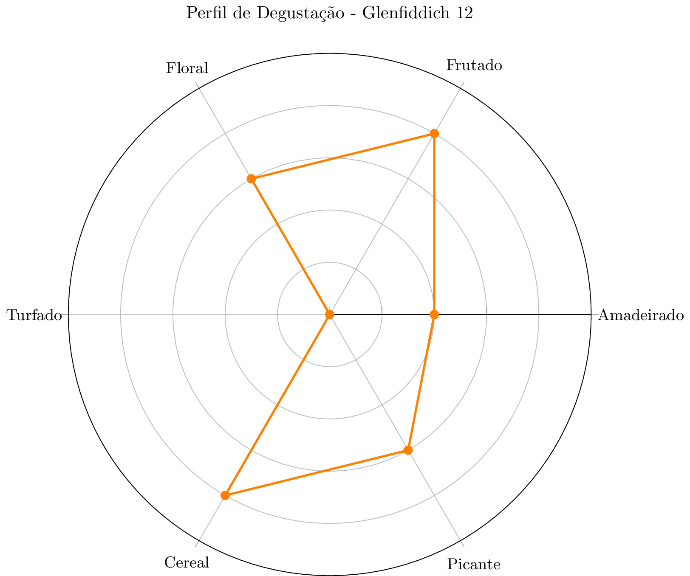

| Propriedade | Detalhe |
|---|---|
| Data da Degustação | 19/11/2025 |
| Tipo | Single Malt |
| Idade | 12 anos |
| Destilaria | Glenfiddich |
| Cor | Dourado claro |

Foi meu primiero whisky single malt para degustação, acho que ainda vou ter que revisitar este whisky quando tiver mais experiência
Registrado em: 19/11/2025